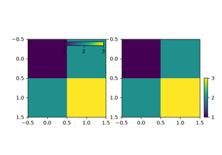

mpl_toolkits.axes_grid1.inset_locator.inset_axes#
- mpl_toolkits.axes_grid1.inset_locator.inset_axes(parent_axes, width, height, loc='upper right', bbox_to_anchor=None, bbox_transform=None, axes_class=None, axes_kwargs=None, borderpad=0.5)[source]#
Create an inset axes with a given width and height.
Both sizes used can be specified either in inches or percentage. For example,:
inset_axes(parent_axes, width='40%', height='30%', loc='lower left')
creates in inset axes in the lower left corner of parent_axes which spans over 30% in height and 40% in width of the parent_axes. Since the usage of
inset_axesmay become slightly tricky when exceeding such standard cases, it is recommended to read the examples.- Parameters:
- parent_axes
matplotlib.axes.Axes Axes to place the inset axes.
- width, heightfloat or str
Size of the inset axes to create. If a float is provided, it is the size in inches, e.g. width=1.3. If a string is provided, it is the size in relative units, e.g. width='40%'. By default, i.e. if neither bbox_to_anchor nor bbox_transform are specified, those are relative to the parent_axes. Otherwise, they are to be understood relative to the bounding box provided via bbox_to_anchor.
- locstr, default: 'upper right'
Location to place the inset axes. Valid locations are 'upper left', 'upper center', 'upper right', 'center left', 'center', 'center right', 'lower left', 'lower center', 'lower right'. For backward compatibility, numeric values are accepted as well. See the parameter loc of
Legendfor details.- bbox_to_anchortuple or
BboxBase, optional Bbox that the inset axes will be anchored to. If None, a tuple of (0, 0, 1, 1) is used if bbox_transform is set to parent_axes.transAxes or parent_axes.figure.transFigure. Otherwise, parent_axes.bbox is used. If a tuple, can be either [left, bottom, width, height], or [left, bottom]. If the kwargs width and/or height are specified in relative units, the 2-tuple [left, bottom] cannot be used. Note that, unless bbox_transform is set, the units of the bounding box are interpreted in the pixel coordinate. When using bbox_to_anchor with tuple, it almost always makes sense to also specify a bbox_transform. This might often be the axes transform parent_axes.transAxes.
- bbox_transform
Transform, optional Transformation for the bbox that contains the inset axes. If None, a
transforms.IdentityTransformis used. The value of bbox_to_anchor (or the return value of its get_points method) is transformed by the bbox_transform and then interpreted as points in the pixel coordinate (which is dpi dependent). You may provide bbox_to_anchor in some normalized coordinate, and give an appropriate transform (e.g., parent_axes.transAxes).- axes_class
Axestype, default:HostAxes The type of the newly created inset axes.
- axes_kwargsdict, optional
Keyword arguments to pass to the constructor of the inset axes. Valid arguments include:
Property
Description
{'box', 'datalim'}
a filter function, which takes a (m, n, 3) float array and a dpi value, and returns a (m, n, 3) array and two offsets from the bottom left corner of the image
float or None
(float, float) or {'C', 'SW', 'S', 'SE', 'E', 'NE', ...}
bool
{'auto', 'equal'} or float
bool
unknown
unknown
Callable[[Axes, Renderer], Bbox]
bool or 'line'
float or None
BboxBaseor Nonebool
Patch or (Path, Transform) or None
bool or "auto"
bool
str
bool
object
bool
bool
unknown
list of
AbstractPathEffectNone or bool or float or callable
[left, bottom, width, height] or
Bboxfloat or None
bool
(scale: float, length: float, randomness: float)
bool or None
unknown
str
str
bool
(lower: float, upper: float)
unknown
str
(left: float, right: float)
float greater than -0.5
unknown
unknown
unknown
(lower: float, upper: float)
unknown
str
(bottom: float, top: float)
float greater than -0.5
unknown
unknown
unknown
float
- borderpadfloat or (float, float), default: 0.5
Padding between inset axes and the bbox_to_anchor. If a float, the same padding is used for both x and y. If a tuple of two floats, it specifies the (x, y) padding. The units are axes font size, i.e. for a default font size of 10 points borderpad = 0.5 is equivalent to a padding of 5 points.
Added in version 3.11: The borderpad parameter now accepts a tuple of (x, y) paddings.
- parent_axes
- Returns:
- inset_axesaxes_class
Inset axes object created.
Notes
The meaning of bbox_to_anchor and bbox_to_transform is interpreted differently from that of legend. The value of bbox_to_anchor (or the return value of its get_points method; the default is parent_axes.bbox) is transformed by the bbox_transform (the default is Identity transform) and then interpreted as points in the pixel coordinate (which is dpi dependent).
Thus, following three calls are identical and creates an inset axes with respect to the parent_axes:
axins = inset_axes(parent_axes, "30%", "40%") axins = inset_axes(parent_axes, "30%", "40%", bbox_to_anchor=parent_axes.bbox) axins = inset_axes(parent_axes, "30%", "40%", bbox_to_anchor=(0, 0, 1, 1), bbox_transform=parent_axes.transAxes)
Examples using mpl_toolkits.axes_grid1.inset_locator.inset_axes#

Control the position and size of a colorbar with inset_locator.inset_axes